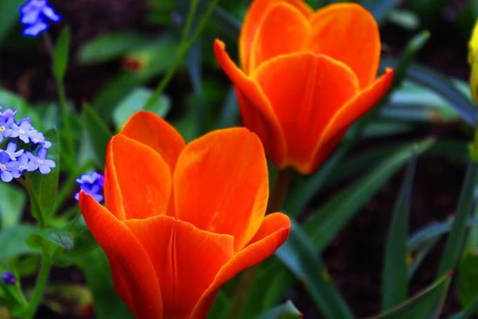

| Start | Olika typer av bilder | Tips & trix | Kontakt |
Om man känner att man inte får några bra bilder, man kanske
inte hittar en bra vinkel eller bra ljus så kan man testa att gå närmre
på något, tex en blomma eller en liten detalj på ett hus tak så att man ser
alla detaljer i de du fotar.
Man behöver inte alltid fota byggnader eller föremål,
testa att fota männsior i rörelse, en actionbild som de kallas.
Genom att göra de så kan man fånga coola bilder.
Här kommer några exempel:

Om man vill ha lite annurlunda bilder som man annars
kanske aldrig tar, så testa att vrida kameran till olika vinklar
och se vad du fångar på bild.
Här kommer några exempel: